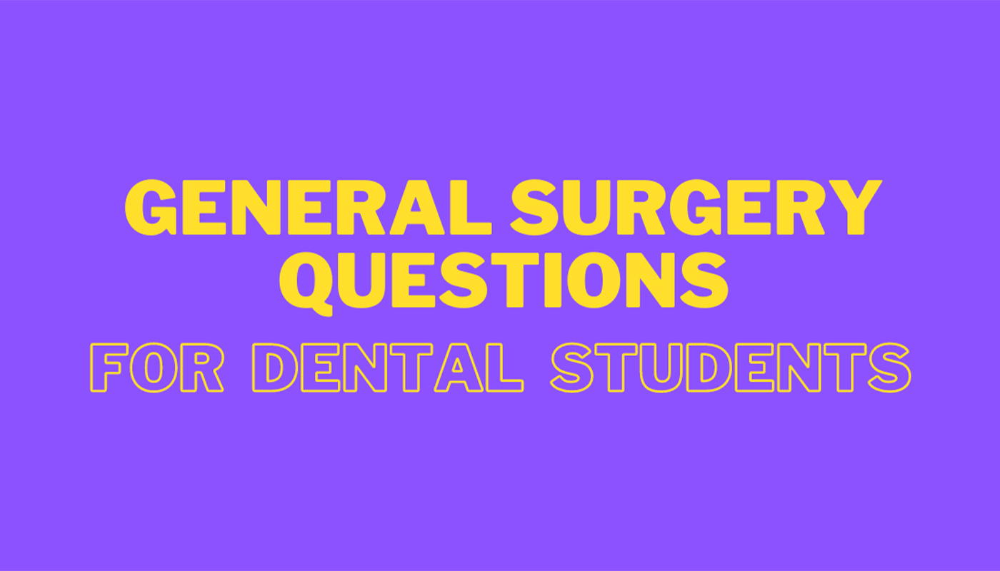

General Surgery Important Questions – Important Exam Questions
Hi everyone sharing with you important questions asked in previous year BDS General Surgery examination in various universities. Hope these questions help you to know which topics are important & should be paid more emphasis on while preparing for exams. If you find these helpful please let me know in the comment box below. All the best in advance!!!
Long Questions
- Describe general principles of fracture, clinical presentation, various methods of treatment and healing of fracture.
- Describe different types of mandibular fractures their clinical presentation and treatment.
- Classification, clinical features & treatment principles in various types of ulcers.
- Indications, procedures & complications of tracheostomy.
- Differentiate between types of thyrotoxicosis. Outline the management of primary thyrotoxicosis.
- Describe types of gangrene. Mention etiology, pathogenesis, clinical features & management of diabetic foot gangrene.
- Describe the surgical anatomy of inguinal canal. Differentiate between irreducible and obstructed inguinal hernia. How to manage a case of right strangulated inguinal hernia.
- Classify wounds. Describe the stages of wound healing.
- Describe the pathophysiology, clinical features, investigation & management of diabetic foot.
- Discuss the etiology, classification, clinical features & management of malignant melanoma.
- Explain the surgical anatomy of thyroid. Classification of thyroid neoplasm & explain the management of papillary carcinoma of thyroid.
- Describe the classification, etiology and management of mixed salivary gland tumour.
- Discuss various types of hemorrhage. Clinical features & management of hypovolemic shock .
- Discuss the pathology, clinical features & treatment of mixed parotid tumour .
- Discuss about blood grouping and cross matching. What are the various indications of blood transfusion in surgical practice and its complication.
- Discuss the etiological factors of cervical lymphadenopathy. And mention the clinical features, investigation, and treatment of tuberculous-lymphadenitis.
- Describe the classification & pathophysiology of gangrene. Describe the management and complications of diabetic gangrene.
- What are the ulcer of tongue? Write its differential diagnosis and management of CA-tongue.
- Describe the etiology, clinical features & management of premalignant lesions of oral cavity.
- Classify fractures. Write about management of fractures of mandible?
- Describe extra-cranial course of facial nerve. Write about management of facial nerve palsy.
- Describe classification of wounds. Describe the pathophysiology of wound healing. Describe management and complication of wounds.
- What is ulcer. What are the clinical types. Write differential diagnosis and management of ulcer of tongue.
- What are the swelling of the jaw. Write differential diagnosis & management.
- Describe the classification, clinical features, investigation & management of cleft lip.
- Classify thyroid tumour . Discuss briefly the pathology ,clinical features, investigation & treatment of papillary carcinoma thyroid.
- Discuss the pathophysiology & early management of burns.
- Classify cleft lip and discuss management of cleft lip.
- Describe pathophysiology , types & clinical features of shock.
- Describe classification, clinical features, investigation and management of maxillofacial injuries.
- Describe etiology, clinical features and management of primary thyrotoxicosis.
- Describe pathophysiology , clinical features, investigation and managements of diabetic foot.
- Discuss the pathophysiology, clinical features and management of malignant melanoma.
- Describe the etiology ,classification and management of mixed salivary tumour.
- Describe the etiology, clinical features and management of a case of tetanus.
- Describe pre-cancerous lesions of oral cavity. Discuss about the clinical features, investigation and treatment of carcinoma of cheek with it’s metastasis.
- Describe the etiology ,clinical features and management of a case of cellulitis face.
- Describe the etiology , pathology ,clinical-features and management of GRAVE’S DISEASE.
- Classify hemorrhage. Describe briefly about the management of hemophilia.
- Classify salivary gland tumour. Describe the management of Warthin’s tumour.
- Enumerate parotid gland tumors .Outline management of pleomorphic adenoma.
- Discuss about submucous fibrosis of oral cavity and it’s management.
- Describe various lower jaw swellings. Discuss the management of ameloblastoma of mandible.
- Define shock. Describe the clinical features & management of hypovolemic shock.
- Describe the clinical features & management of pleomorphic adenoma.
- Describe the etiology of goiter. Discuss the management of solitary thyroid nodule.
- What are jaw tumors. Describe clinical features & management of osteomyelitis of jaw.
- Enumerate midline swellings of neck. Describe the clinical presentation & management of thyroglossal cyst.
- Discuss the various indication and types of tracheostomy.
- Discuss the pathology, clinical features & treatment of multinodular goiter.
- Discuss pathogenesis , clinical features & treatment of plunging ranula.
- Classify fractures. Describe etiology, clinical features and management of compound fractures.
- Describe etiology, pathology, clinical features and treatment of acute osteomyelitis. What is the sequel of poorly treated osteomyelitis.
- Write the close methods of reduction and immobilization of fracture of long bone and fracture body and angle of mandible.
- How will you manage a case of ankylosis of TMJ
Short Questions
- FNAC
- Pleomorphic adenoma
- Trigeminal neuralgia
- Diathermy
- Thyroglossal cyst
- Bell palsy
- Riedel’s thyroiditis
- Crohn’s disease
- Alvarado score
- Carotid body tumour
- Ludwig’s angina
- Pheochromocytoma
- Capillary hemangioma
- Cleft lip
- OPG
- Ranula
- Lipoma
- Cold abscess
- Rodent ulcer
- Epidermoid cyst
- Sjogren’s syndrome
- Vincent’s angina
- HIV
- Parotid fistula
- Laser in surgery
- Hypothyroidism
- Hemophilia
- Warthin’s tumour
- Lingual thyroid
- Trigeminal neuralgia
- Epulis
- Basal cell carcinoma
- Tracheostomy
- Facial palsy
- Sialadenitis
- Dentigerous cyst
- Branchial fistula
- Complications of blood transfusion
- Types of biopsy
- Dry gangrene
- Autoclave
- Tetany
- Thyroglossal cyst
- PET scan
- Gas gangrene
- Triangles of neck & relevance of neck dissection
- Ameloblastoma
- Carotid body tumour
- Branchial cyst
- Diabetic ulcer
- Multiple endocrine neoplasia syndrome
- Frey’s syndrome & Sjogren’s syndrome
- Diathermy
- Types of suture
- Sialography
- Subdural hematoma
- Complications of cleft palate
- Oral manifestation of syphilis
- Sebaceous cyst
- TNM classification of tumour
- Lymphatic cyst
- Keloid
- Thyroglossal fistula
- Retrosternal goiter
- Submucosal fibrosis
- Cystic hygroma
- MRI
- Prophylactic antibiotics
- Sublingual dermoid
- Deep vein thrombosis
- Orthognathic surgery
- Bell’s palsy
- Sialolithiasis
- Marjolin’s ulcer
- Dermoid cyst
- Hemangioma
- Ewing’s sarcoma
- Necrotizing fasciitis
- Total parenteral nutrition
- Absorbable suture materials
- Cleft palate
- Phenol
- Osteoclastoma
- Thrombophlebitis
- Cellulitis
- Mixed parotid tumour
- Cervical rib
- Hemorrhagic shock
- Differentiating features of Le Fort Type I, II and III fractures
- Methods of immobilization of fracture body of mandible.
- Delayed union of fracture of bone.
- Malunion of fracture of bone.
- Non-healing ulcer
- Trophic ulcer
- Define and describe differentiating features of Curling ulcer and
cushing’s ulcer.
Let's Connect